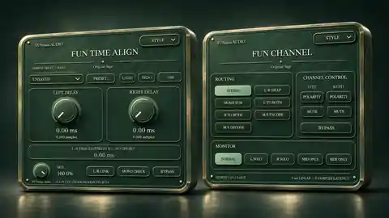
FUNtasia Audio
Öffentlicher Produktkatalog
Entdecke die Produkte der bestehenden FUNtasia Audio-Website. Veröffentlichungen und Downloads findest du auf den ursprünglichen Produktkarten.
Die Produktbilder sind Konzeptvisualisierungen und können von den tatsächlichen Plugin-Oberflächen abweichen.
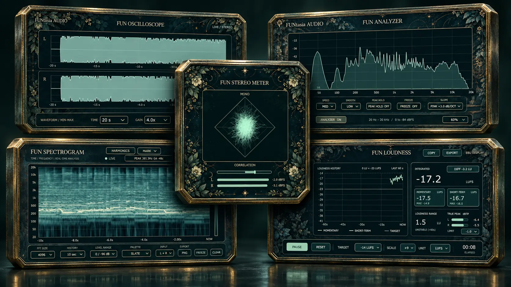
FUN Analysis Pack
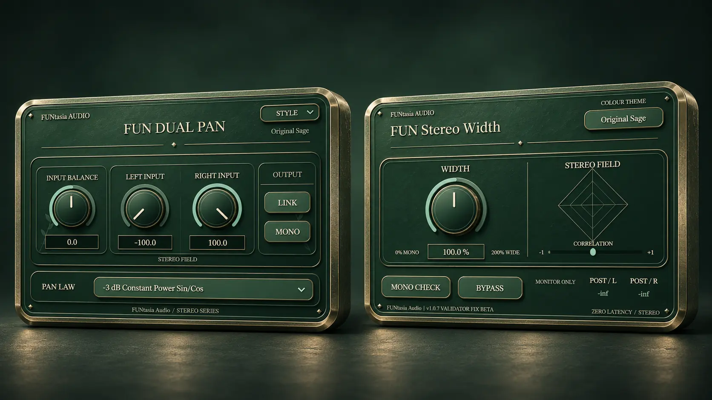
FUN Stereo Pack

FUN Dimension Expander
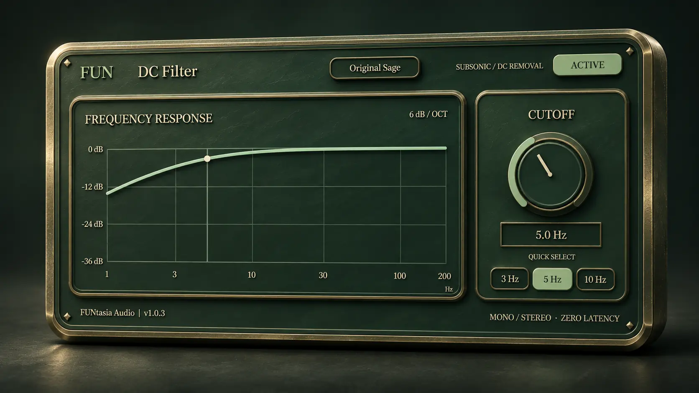
FUN DC Filter

FUN Dither
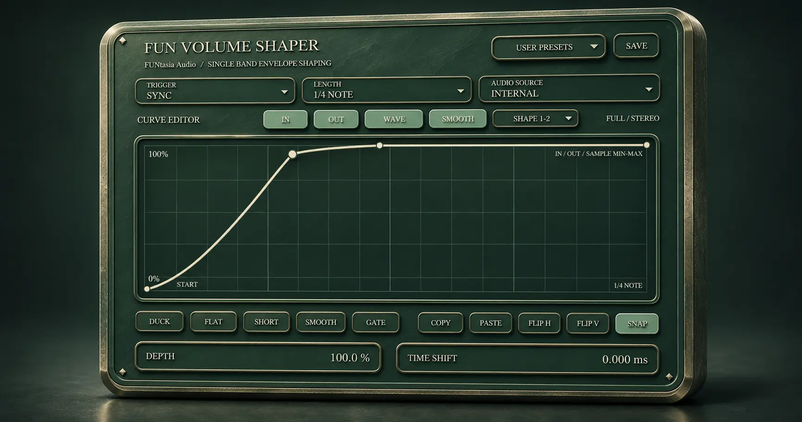
FUN Volume Shaper
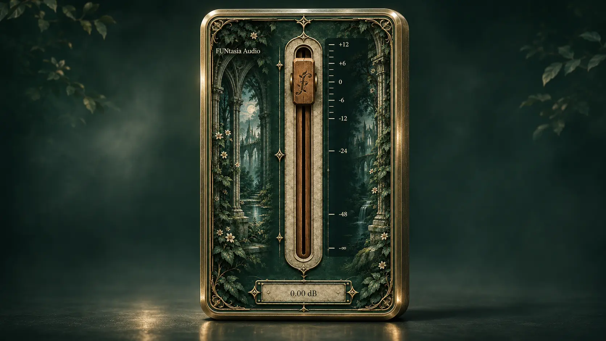
FUN Fader

FUN MonoFilter

FUN Rack FREE

FUN Drum Pad
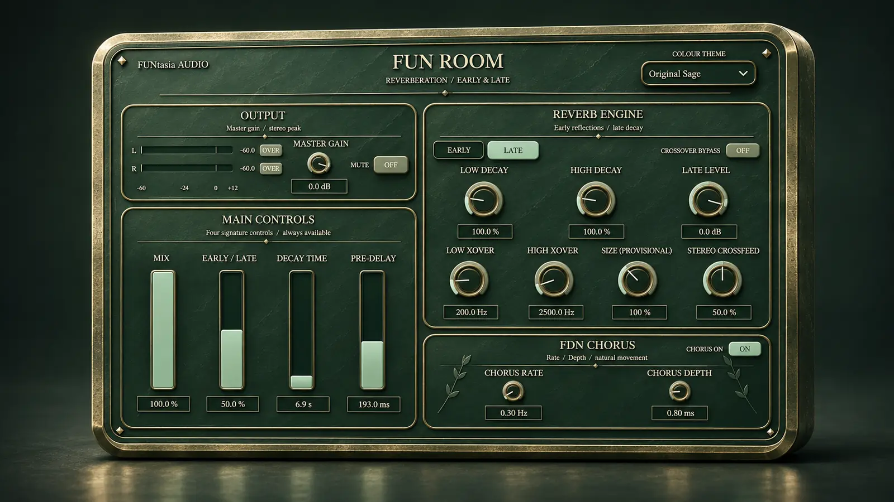
FUN Room

FUN PreAmp

FUN Clipper & Limiter Pack

FUN Dynamics Pack

FUN OTT

The Deep Roots
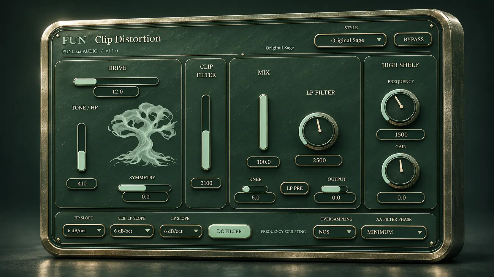
FUN Clip Distortion

FUN WaveShaper

FUN EQ

FUN MEQ
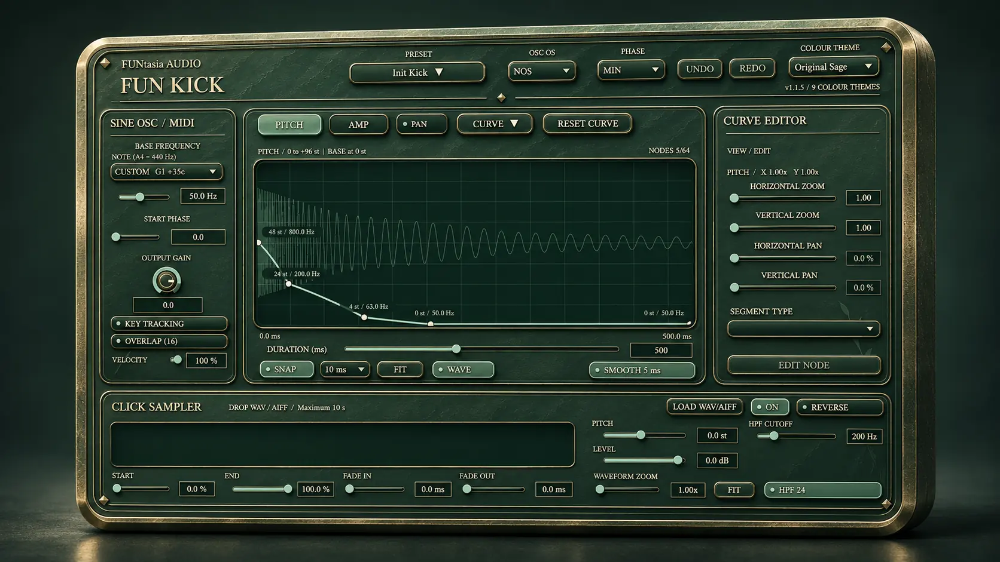
FUN Kick
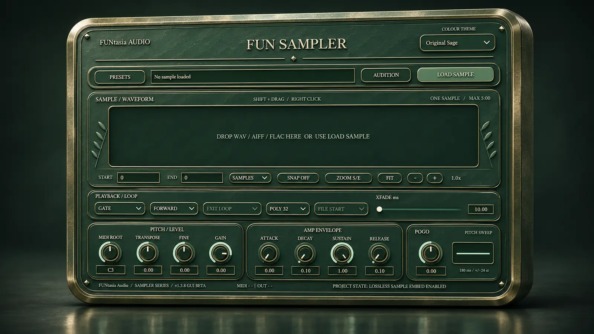
FUN Sampler

FUN Strike
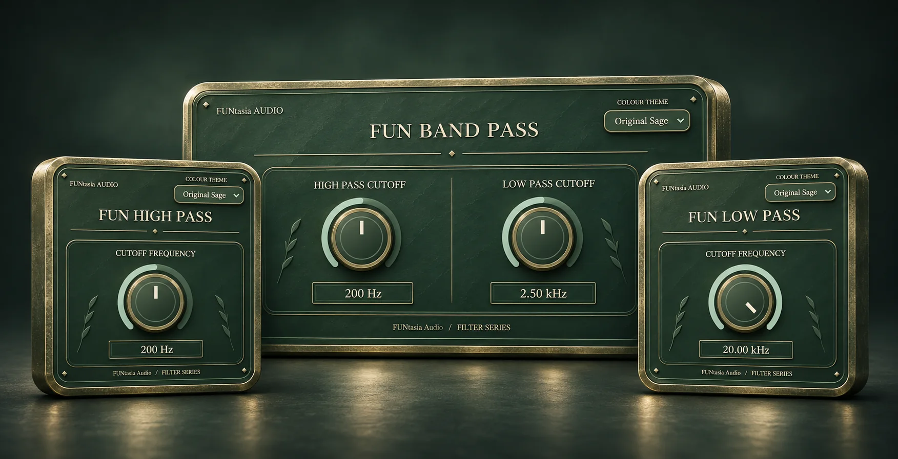
FUN Basic Filter Pack
Keine passenden Produkte